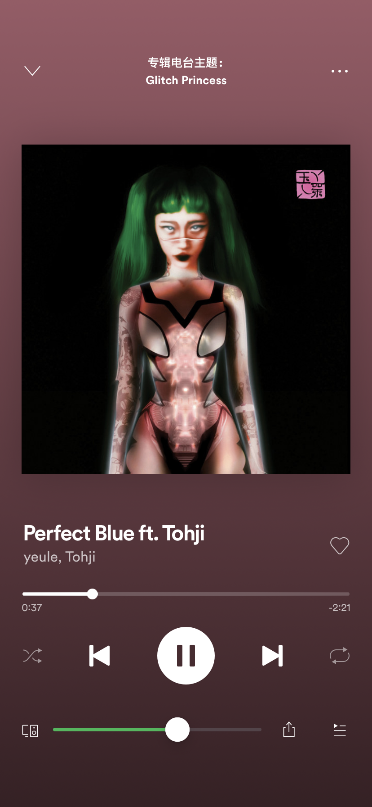

-
What's a music player without a volume controller? This tweak adds a volume slider to the Spotify Now Playing screen. Not tested on iPad.

In this version
-
2.0
- Rewrote the tweak in Swift.
- Basically all bugs fixed?
- Support for the latest Spotify version.
Previous updates
-
1.0.11
- Fix unresponsive volume bar issue.
-
1.0.10
- Bug fixes.
-
1.0.9
- Bug fixes.
-
1.0.7
- Fixed volume bar unresponsiveness on iPhone 6/7/8 Plus devices. I don't have a test device but it should be better than before.
-
1.0.6
- Fix unresponsive queue button.
- Volume bar is now centred properly.
-
1.0.5
- Fix overlapping on device label.
-
1.0.4
- Bring back Spotify's AirPlay routing button.
- Move the volume bar to be in between the routing button and the queue button.
-
1.0.3
- Implement my own AirPlay routing button and remove Spotify's to fix overlapping issues.
-
1.0.2
- Hopefully fix the bluetooth label overlapping .
-
1.0.1
- Add postinst message.
-
1.0.0
- Initial release.
Known Issues
- No current issues.